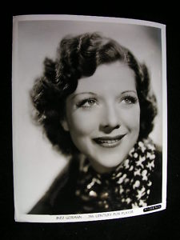

Inez Gorman
Born October 31, 1912 in Massachusetts, she was a soprano trained at Philadelphia's Curtis Institute of Music, where on April 13, 1933 she gave the first performance of Ezra Rachlin's Goethe song "Gefunden" in Casimir Hall. She married Ernie Orsatti in Beverly Hills in September 1934, the year he won the World Series, and they had two sons who became the family's stunt dynasty: Ernie F. and Frank H.
Twentieth Century-Fox signed her around 1936 for glamour portraits by Gene Kornman; in January 1937 she was elected an active member of the American Guild of Musical Artists alongside Rose Bampton and John McCormack; and Hal Roach tested her for a vocalist part in Laurel and Hardy's Swiss Miss (1938).
In 1945 she sang as Nelson Eddy's guest soprano on CBS radio's The Electric Hour (March 11, April 8 and June 17). At MGM in the early 1950s she sang Calpurnia in the opera sequence of Strictly Dishonorable opposite Ezio Pinza, and played Mrs. Simpson in Singin' in the Rain.
In 1936 she sang at the Metropolitan Opera in Wagner's Die Meistersinger.
She and Ernie divorced in 1952; in 1953 she married Raymond Earl Pierson, her husband until her death in Glendale on December 6, 1986. Her son Ernie F. remembered the Christmas Eve parties at home, his father cooking for dozens of guests "from show business and the opera world." Ernie F. also remembered his father as a great athlete and a talented chef.
Credits in the archive (6)
- 1951 No Questions Asked Minor role
- 1951 Strictly Dishonorable Calpurnia, opera sequence
- 1952 Love Is Better Than Ever Mrs. Sperson
- 1952 Singin' in the Rain Mrs. Simpson
- 1953 Dream Wife Secretary
- 1953 Give a Girl a Break Miss Leslie
Sources: From the Orsatti family collection · reed.dur.ac.uk · sabr.org · docslib.org · catalog.afi.com · radiogoldin.library.umkc.edu · radioechoes.com · catalog.afi.com · imdb.com · allmovie.com · imdb.com · leadinglightsautographs.com